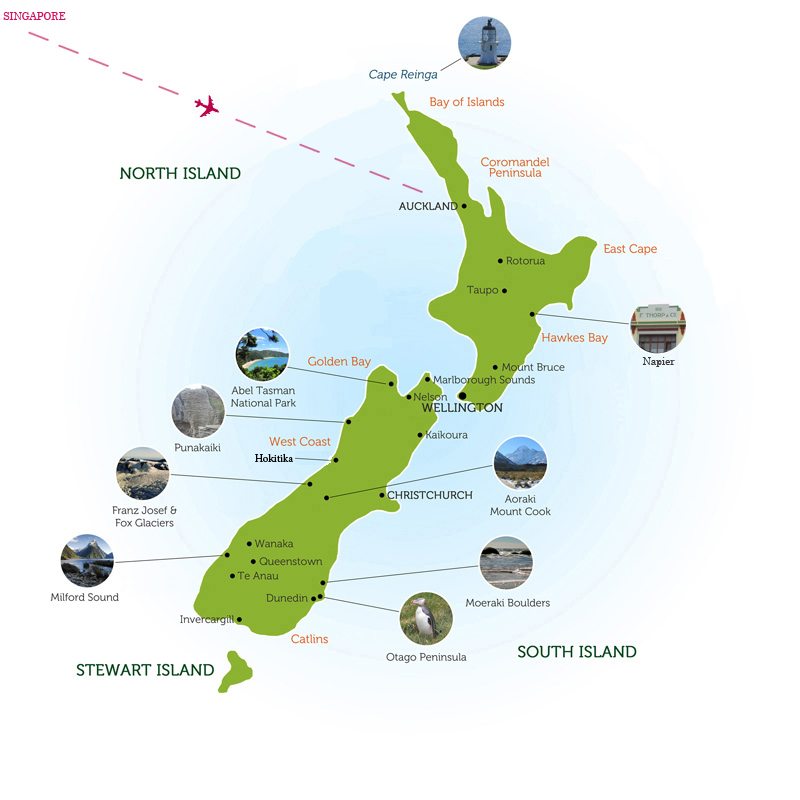

Singapore and New Zealand - 2016
Nearly 50 years after leaving Singapore as a child, I returned for three days on the way to a motorhome trip of the North and South Islands of New Zealand. Seán and I flew into Auckland, took the ferry to the South Island and departed from Christchurch after experiencing some of the most spectacular scenery we had ever seen.
